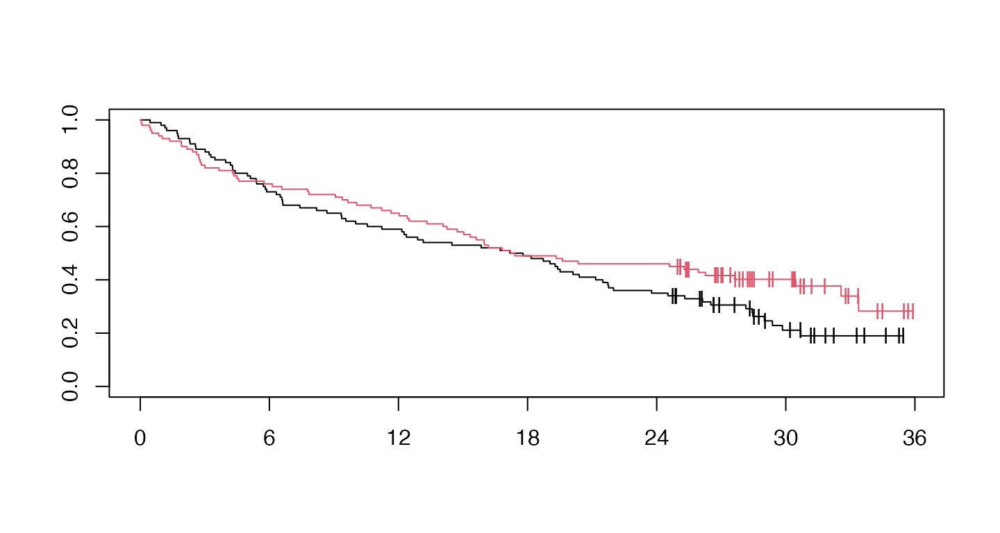
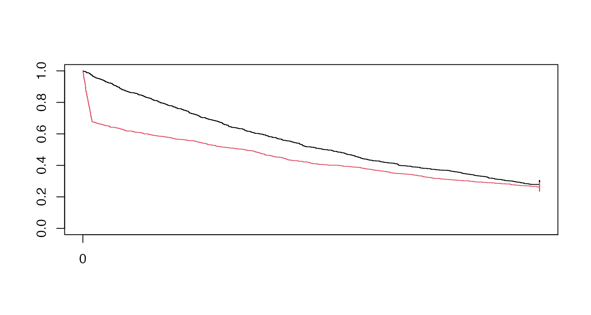

modestWLRTVignette.RmdMagirr and Burman (2019) implemented a modestly weighted logrank test with the following claim: `Tests from this new class can be constructed to have high power under a delayed-onset treatment effect scenario, as well as being almost as efficient as the standard logrank test under proportional hazards.'' They have implemented this in the package \strong{modestWLRT} available at Github.com. Since the implementation is relatively straightforward, we have added this functionality to the \strong{simtrial} package and explain how to use it here with thewMB()` function.
We consider two examples:
Packages used are as follows:
First, we specify study duration, sample size and enrollment rates. The enrollment rate is assumed constant during the enrollment period until the targeted sample size is reached. For failure rates, we consider the delayed treatment effect example of Magirr and Burman (2019). The control group has an exponential failure rate with a median of 15 months. For the initial 6 months, the underlying hazard ratio is one followed by a hazard ratio of 0.7 thereafter. This differs from the Magirr and Burman (2019) delayed effect assumptions only in that they assume a hazard ratio of 0.5 after 6 months.
studyDuration = 36
sampleSize <- 200
enrollRates <- tibble::tibble(duration = 12, rate = 200/12)
failRates <- tibble::tribble(
~Stratum, ~duration, ~failRate, ~hr, ~dropoutRate,
"All", 6, log(2)/15, 1, 0,
"All", 36, log(2)/15, .7, 0
)Now we generate a single dataset with the above characteristics and cut data for analysis at 36 months post start of enrollment. Then we plot Kaplan-Meier curves for the resulting dataset (red curve for experimental treatment, black for control):
set.seed(7783)
xpar <- simfix2simPWSurv(failRates)
MBdelay <- simPWSurv(n = sampleSize,
strata = tibble::tibble(Stratum = "All", p = 1),
block = c(rep("Control", 2), rep("Experimental", 2)),
enrollRates = enrollRates,
failRates = xpar$failRates,
dropoutRates = xpar$dropoutRates) %>%
cutData(studyDuration)
fit <- survfit(Surv(tte,event)~Treatment,data=MBdelay)
plot(fit,col=1:2,mark="|", xaxt="n")
axis(1, xaxp=c(0, 36, 6))
We perform a logrank and weighted logrank tests as follows:
xx <- MBdelay %>%
tensurv(txval="Experimental") %>%
tenFHcorr(rg=tibble(rho=c(0,0,1),gamma=c(0,1,1))) %>%
mutate(p=pnorm(Z))
xx
#> rho gamma Z V1 V2 V3
#> 1 0 0 -1.623630 1.0000000 0.8620167 0.9318306
#> 2 0 1 -2.240298 0.8620167 1.0000000 0.9596123
#> 3 1 1 -2.074833 0.9318306 0.9596123 1.0000000
#> p
#> 1 0.05222739
#> 2 0.01253579
#> 3 0.01900102Now for a MaxCombo test with the above compoenent tests, we have p-value of
xx %>% pMaxCombo()
#> [1] 0.03713789Next, we consider the Magirr and Burman (2019) modestly weighted logrank test with down-weighting specifid for the first 6 months. This requires generating weights and then computing the test.
ZMB <- MBdelay %>%
tensurv(txval="Experimental") %>%
wMB(6) %>%
summarize(S=sum(OminusE*wMB),V=sum(Var*wMB^2),Z=S/sqrt(V))
# Compute p-value of modestly weighted logrank of Magirr-Burman
pnorm(ZMB$Z)
#> [1] 0.0384576Finally, we consider weighted logrank tests with less down-weighting. Results are quite similar to the results with greater down-weighting.
xx <- MBdelay %>%
tensurv(txval="Experimental") %>%
tenFHcorr(rg=tibble(rho=c(0,0,.5),gamma=c(0,.5,.5))) %>%
mutate(p=pnorm(Z))
xx
#> rho gamma Z V1 V2 V3
#> 1 0.0 0.0 -1.623630 1.0000000 0.9402251 0.9682455
#> 2 0.0 0.5 -2.153278 0.9402251 1.0000000 0.9880393
#> 3 0.5 0.5 -2.024016 0.9682455 0.9880393 1.0000000
#> p
#> 1 0.05222739
#> 2 0.01564840
#> 3 0.02148424Check vs tenFH().
xx <- MBdelay %>%
tensurv(txval="Experimental") %>%
tenFH(rg=tibble(rho=c(0,0,.5),gamma=c(0,.5,.5)))
xx
#> # A tibble: 3 x 3
#> rho gamma Z
#> <dbl> <dbl> <dbl>
#> 1 0 0 -1.62
#> 2 0 0.5 -2.15
#> 3 0.5 0.5 -2.02
xx <- MBdelay %>%
tensurv(txval="Experimental") %>%
tenFHcorr(rg=tibble(rho=c(0,0,.5,.5),gamma=c(0,.5,.5,0))) %>%
mutate(p=pnorm(Z))
xx
#> rho gamma Z V1 V2 V3
#> 1 0.0 0.0 -1.623630 1.0000000 0.9402251 0.9682455
#> 2 0.0 0.5 -2.153278 0.9402251 1.0000000 0.9880393
#> 3 0.5 0.5 -2.024016 0.9682455 0.9880393 1.0000000
#> 4 0.5 0.0 -1.342828 0.9873481 0.8764846 0.9257976
#> V4 p
#> 1 0.9873481 0.05222739
#> 2 0.8764846 0.01564840
#> 3 0.9257976 0.02148424
#> 4 1.0000000 0.08966377Now for a MaxCombo test with the above compoenent tests, we have p-value of
xx %>% pMaxCombo()
#> [1] 0.06113965The underlying survival is worse for the experimental group is uniformly worse for the experimental group until the very end of the study. This was presented by Freidlin and Korn (2019). For this case, we have a hazard ratio of 16 for 1/10 of 1 year (1.2 months), followed by a hazard ratio of
First, we specify study duration, sample size and enrollment rates. The enrollment rate is assumed constant during the enrollment period until the targeted sample size is reached. For failure rates, we consider the delayed treatment effect example of Magirr and Burman (2019). The control group has an exponential failure rate with a median of 15 months. For the initial 6 months, the underlying hazard ratio is one followed by a hazard ratio of 0.7 thereafter. This differs from the Magirr and Burman (2019) delayed effect assumptions only in that they assume a hazard ratio of 0.5 after 6 months.
studyDuration = 5
sampleSize <- 2000
enrollDuration <- .0001
enrollRates <- tibble::tibble(duration = enrollDuration, rate = sampleSize/enrollDuration)
failRates <- tibble::tibble(Stratum="All",
failRate=0.25,
dropoutRate=0,
hr=c(4/.25,.19/.25),
duration=c(.1,4.9)
)Now we generate a single dataset with the above characteristics and cut data for analysis at 36 months post start of enrollment. Then we plot Kaplan-Meier curves for the resulting dataset (red curve for experimental treatment, black for control):
set.seed(7783)
xpar <- simfix2simPWSurv(failRates)
FHwn <- simPWSurv(n = sampleSize,
strata = tibble::tibble(Stratum = "All", p = 1),
block = c(rep("Control", 2), rep("Experimental", 2)),
enrollRates = enrollRates,
failRates = xpar$failRates,
dropoutRates = xpar$dropoutRates) %>%
cutData(studyDuration)
fit <- survfit(Surv(tte,event)~Treatment,data=FHwn)
plot(fit,col=1:2,mark="|", xaxt="n")
axis(1, xaxp=c(0, 36, 6))
We perform a logrank and weighted logrank tests as follows:
xx <- FHwn %>%
tensurv(txval="Experimental") %>%
tenFHcorr(rg=tibble(rho=c(0,0,1),gamma=c(0,1,1))) %>%
mutate(p=pnorm(Z))
xx
#> rho gamma Z V1 V2 V3
#> 1 0 0 4.617446 1.0000000 0.8655736 0.9370555
#> 2 0 1 -2.410882 0.8655736 1.0000000 0.9547499
#> 3 1 1 -1.039684 0.9370555 0.9547499 1.0000000
#> p
#> 1 0.999998058
#> 2 0.007957003
#> 3 0.149243406Now for a MaxCombo test with the above compoenent tests, we have p-value of
xx %>% pMaxCombo()
#> [1] 0.02368157Next, we consider the Magirr and Burman (2019) modestly weighted logrank test with down-weighting specifid for the first 6 months. This requires generating weights and then computing the test.
ZMB <- FHwn %>%
tensurv(txval="Experimental") %>%
wMB(6) %>%
summarize(S=sum(OminusE*wMB),V=sum(Var*wMB^2),Z=S/sqrt(V))
# Compute p-value of modestly weighted logrank of Magirr-Burman
pnorm(ZMB$Z)
#> [1] 0.7767713Finally, we consider weighted logrank tests with less down-weighting. Results are quite similar to the results with greater down-weighting.
xx <- FHwn %>%
tensurv(txval="Experimental") %>%
tenFHcorr(rg=tibble(rho=c(0,0,.5),gamma=c(0,.5,.5))) %>%
mutate(p=pnorm(Z))
xx
#> rho gamma Z V1 V2 V3
#> 1 0.0 0.0 4.6174462 1.0000000 0.9422827 0.9715693
#> 2 0.0 0.5 -0.3387568 0.9422827 1.0000000 0.9863309
#> 3 0.5 0.5 0.9494496 0.9715693 0.9863309 1.0000000
#> p
#> 1 0.9999981
#> 2 0.3673965
#> 3 0.8288040Now for a MaxCombo test with the above compoenent tests, we have p-value of
xx %>% pMaxCombo()
#> [1] 0.7468401Freidlin, Boris, and Edward L Korn. 2019. “Methods for Accommodating Nonproportional Hazards in Clinical Trials: Ready for the Primary Analysis?” Journal of Clinical Oncology 37 (35): 3455–9.
Magirr, Dominic, and Carl-Fredrik Burman. 2019. “Modestly Weighted Logrank Tests.” Statistics in Medicine 38 (20): 3782–90.